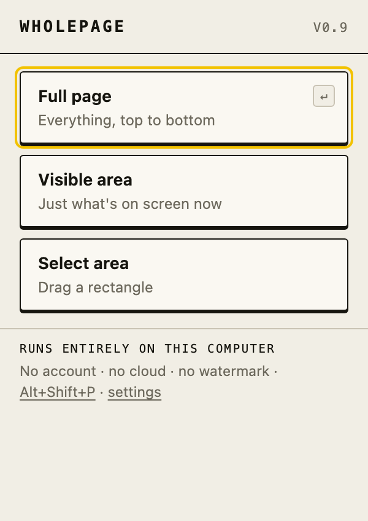
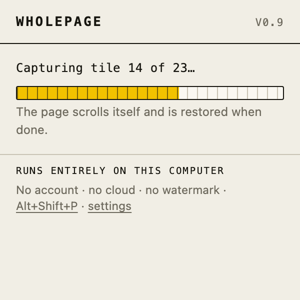

Full page, visible area, or a dragged rectangle — all free, no account.

The menu. Enter = full page.

Progress is a ruler. It fills tile by tile,
and the page is restored when done.
The page scrolls itself, lazy content is
loaded before the shutter, and every
seam is measured — not assumed.